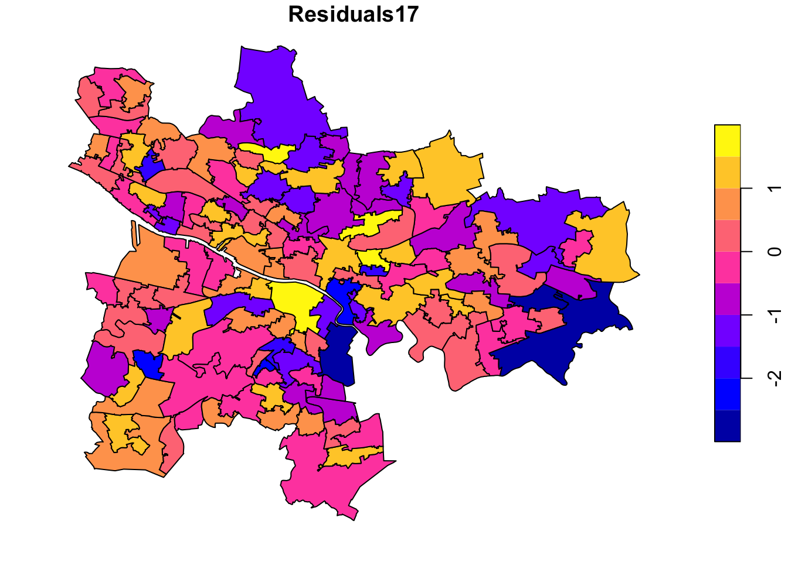
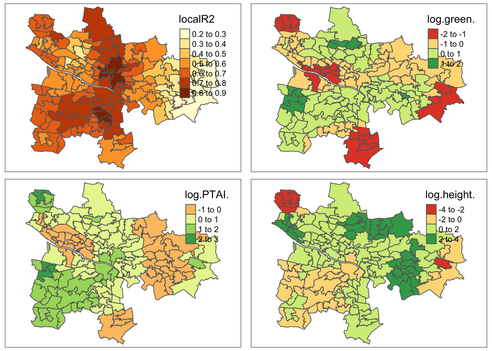

library(tidyverse) # data wrangling and plotting
library(sf) # Manipulating spatial files
library(tmap) # Dealing with maps
library(spgwr) # GWRs
library(spdep) # moran's IAGILE2022 Reproducible Codes
Data Exploration
Call Packages and data
As the data were all pre-cleaned, the csv files were all put into the same column key called Name.
strava <- read_csv("Cleaned Files/strava.csv") # response
green <- read_csv("Cleaned Files/green.csv") # predictors
ptai <- read_csv("Cleaned Files/ptai.csv") # predictors
buildings <- read_csv("Cleaned Files/buildings.csv") # predictors
shp <- read_sf("Cleaned Files/Glasgow_IZ.shp")
# merge all
strava %>%
left_join(green, by = "Name") %>%
left_join(ptai, by = "Name") %>%
left_join(buildings, by = "Name") -> glasgow_dfThe Figure 1 shows the correlation between Strava 2017 and Strava 2018. The correlation is 0.9975779, which means it is nearly identical - not what I expected!
plot(glasgow_df$ride17, glasgow_df$ride18)
cor(glasgow_df$ride17, glasgow_df$ride18)[1] 0.9975779Exploring the Variables
To get an immediate understanding of the variables, the best thing is to map the variables and get summary tables. First, let us look at the summary of the variables.
glasgow_df %>% summary() Name ride17 ride18 green
Length:136 Min. : 1760 Min. : 2275 Min. : 1.320
Class :character 1st Qu.: 32800 1st Qu.: 33606 1st Qu.: 5.780
Mode :character Median : 79293 Median : 81615 Median : 8.068
Mean : 128697 Mean : 135287 Mean : 8.837
3rd Qu.: 153040 3rd Qu.: 168255 3rd Qu.:11.670
Max. :1312075 Max. :1421505 Max. :20.664
PTAI height
Min. : 245.8 Min. : 5.667
1st Qu.: 542.8 1st Qu.: 7.358
Median : 808.5 Median : 8.098
Mean :1022.2 Mean : 9.029
3rd Qu.:1213.8 3rd Qu.: 9.566
Max. :4990.8 Max. :21.133 Here we transform the data to a longer format glasgow_df_long using the pivot_longer function. This is to directly execute ggplot with facet wrapping. After the data transformation, we then merge the shapefile with the integrated data frame that is gl_shp.
glasgow_df %>%
rename(Strava2017 = ride17,
Strava2018 = ride18) %>%
pivot_longer(!Name,
names_to = "Type",
values_to = "Value") -> glasgow_df_long
shp %>%
left_join(glasgow_df_long, by = "Name") -> gl_shpLets look at the strava data first. Here we see that during 2017 and 2018 people including the City Centre South, Laurieston and Tradeston, City Centre East, Finnieston and Kelvinhaugh, and Calton and Gallowgate were identified as the most reported areas.
# Strava Users
gl_shp %>%
filter(Type %in% c("Strava2017", "Strava2018")) %>%
mutate(Value2 = cut(Value,
breaks = c(0, 50000, 100000, 150000, 200000, 300000, +Inf),
labels = c("0-50", "50-100", "100-150", "150-200", "200-30", ">300"))) %>%
tm_shape() +
tm_polygons("Value2", title = "Strava ('000s)", palette="-RdBu") +
tm_facets(by = "Type", free.coords = F, free.scales = F, ncol = 2) -> gl_strava
gl_strava
#tmap_save(gl_strava, "strava.jpg", width = 1000, height = 400, dpi = 300)The figures below show that the per cent of the greenness (by Immediate Zones) gradually tends to decrease as it goes outside the city centre. The average is 8% across the whole area but the lowest is situated in the city centre and the city south.
The height of the buildings were concentrated around the city centre. The City Centre South was the highest at 21.1% followed by City Centre East and City Centre West.
PTAI (Public Transport Availability Indicators) also tend to more clustered in the city centre (>3000) and around the major bus routes (>2000) while the north and the east were relatively lower (<1000).
# Other variables
gl_shp %>%
filter(Type %in% c("green", "PTAI", "height")) %>%
tm_shape() +
tm_polygons("Value", title = "", palette="-RdBu") +
tm_facets(by = "Type", free.coords = F, free.scales = T, ncol = 3) +
tm_layout(legend.position = c("right", "top"),
title.position = c('right', 'top')) -> gl_variable
gl_variable
#tmap_save(gl_variable, "variables.jpg", width = 1000, height = 2500, dpi = 300)OLS Regression - log transformation
#Count data = Discrete Data
#continuous: quantitative data that can take any value in some interval ⇒ linear models
#discrete: quantitative data that takes a “countable” number of values
#(e.g. 0, 1, 2, . . .) ⇒ generalised linear models (GLMs)
#If your data are discrete but the counts are all fairly large, you can
#ignore the discreteness and use linear models anyway. If you have small
#counts and zeros though it is very important to use GLMs instead.
model17 <- lm(log(ride17) ~ green + PTAI + height, data = glasgow_df)
summary(model17)
Call:
lm(formula = log(ride17) ~ green + PTAI + height, data = glasgow_df)
Residuals:
Min 1Q Median 3Q Max
-2.78035 -0.59604 0.08002 0.72427 1.76984
Coefficients:
Estimate Std. Error t value Pr(>|t|)
(Intercept) 10.4216433 0.4704823 22.151 < 2e-16 ***
green -0.0656807 0.0232332 -2.827 0.00543 **
PTAI 0.0003435 0.0001738 1.976 0.05021 .
height 0.1055714 0.0503079 2.099 0.03777 *
---
Signif. codes: 0 '***' 0.001 '**' 0.01 '*' 0.05 '.' 0.1 ' ' 1
Residual standard error: 1.01 on 132 degrees of freedom
Multiple R-squared: 0.3153, Adjusted R-squared: 0.2997
F-statistic: 20.26 on 3 and 132 DF, p-value: 7.342e-11residuals(model17) %>% summary Min. 1st Qu. Median Mean 3rd Qu. Max.
-2.78035 -0.59604 0.08002 0.00000 0.72427 1.76984 #exp(coef(model17)["green"])
#exp(coef(model17)["PTAI"])
#exp(coef(model17)["height"])
car::vif(model17) green PTAI height
1.248832 2.348481 2.368797 AIC(model17, k=3) # k = parameter[1] 399.5545model18 <- lm(log(ride18) ~ log(green) + log(PTAI) + log(height), data = glasgow_df)
summary(model18)
Call:
lm(formula = log(ride18) ~ log(green) + log(PTAI) + log(height),
data = glasgow_df)
Residuals:
Min 1Q Median 3Q Max
-3.0003 -0.6849 0.1573 0.7204 1.7476
Coefficients:
Estimate Std. Error t value Pr(>|t|)
(Intercept) 6.6582 1.4025 4.747 5.29e-06 ***
log(green) -0.4349 0.2028 -2.144 0.0338 *
log(PTAI) 0.3947 0.1996 1.978 0.0500 .
log(height) 1.2745 0.4919 2.591 0.0107 *
---
Signif. codes: 0 '***' 0.001 '**' 0.01 '*' 0.05 '.' 0.1 ' ' 1
Residual standard error: 1.018 on 132 degrees of freedom
Multiple R-squared: 0.313, Adjusted R-squared: 0.2974
F-statistic: 20.05 on 3 and 132 DF, p-value: 9.058e-11residuals(model18)%>% summary Min. 1st Qu. Median Mean 3rd Qu. Max.
-3.0003 -0.6849 0.1573 0.0000 0.7204 1.7476 AIC(model18, k=3) # k = parameter[1] 401.6285#exp(coef(model18)["green"])
#exp(coef(model18)["PTAI"])
#exp(coef(model18)["height"])
#car::vif(model18)shp %>%
left_join(glasgow_df, by = "Name") %>%
bind_cols(
tibble(Residuals18 = residuals(model18),
Residuals17 = residuals(model17))) -> glasgow_gwr
plot(glasgow_gwr["Residuals17"])
mapres17 <- qtm(glasgow_gwr, fill = "Residuals17") + tm_legend(legend.position = c("right", "top"))
mapres18 <- qtm(glasgow_gwr, fill = "Residuals18") + tm_legend(legend.position = c("right", "top"))
(plot_residuals <- tmap_arrange(mapres17, mapres18, widths = 5, heights = 3))Variable(s) "Residuals17" contains positive and negative values, so midpoint is set to 0. Set midpoint = NA to show the full spectrum of the color palette.Variable(s) "Residuals18" contains positive and negative values, so midpoint is set to 0. Set midpoint = NA to show the full spectrum of the color palette.Variable(s) "Residuals17" contains positive and negative values, so midpoint is set to 0. Set midpoint = NA to show the full spectrum of the color palette.Variable(s) "Residuals18" contains positive and negative values, so midpoint is set to 0. Set midpoint = NA to show the full spectrum of the color palette.#tmap_save(plot_residuals, "Residuals.jpg")## Morans'I
nb <- poly2nb(glasgow_gwr, queen=TRUE) # calculate neighbours queen continuity
listw <- nb2listw(nb, style="W", zero.policy=TRUE)
globalMoran17 <- moran.test(glasgow_gwr$ride17, listw)
globalMoran18 <- moran.test(glasgow_gwr$ride18, listw)
globalMoran17
Moran I test under randomisation
data: glasgow_gwr$ride17
weights: listw
Moran I statistic standard deviate = 7.4908, p-value = 3.422e-14
alternative hypothesis: greater
sample estimates:
Moran I statistic Expectation Variance
0.369743016 -0.007407407 0.002534943 globalMoran18
Moran I test under randomisation
data: glasgow_gwr$ride18
weights: listw
Moran I statistic standard deviate = 7.4377, p-value = 5.125e-14
alternative hypothesis: greater
sample estimates:
Moran I statistic Expectation Variance
0.366035942 -0.007407407 0.002521030 glasgow_sp <- as_Spatial(glasgow_gwr)gwr.bandwidth1 <-gwr.sel(log(ride18) ~ log(green) + log(PTAI) + log(height),
data = glasgow_sp,
adapt = T) #estimated optimal bandwidthAdaptive q: 0.381966 CV score: 142.0616
Adaptive q: 0.618034 CV score: 143.3678
Adaptive q: 0.236068 CV score: 139.4898
Adaptive q: 0.145898 CV score: 134.2445
Adaptive q: 0.09016994 CV score: 125.9838
Adaptive q: 0.05572809 CV score: 120.7797
Adaptive q: 0.03444185 CV score: 116.7516
Adaptive q: 0.02128624 CV score: 116.2329
Adaptive q: 0.0233313 CV score: 115.6423
Adaptive q: 0.02719672 CV score: 115.7782
Adaptive q: 0.02480776 CV score: 115.535
Adaptive q: 0.0248742 CV score: 115.5361
Adaptive q: 0.02470378 CV score: 115.5343
Adaptive q: 0.02466309 CV score: 115.5343
Adaptive q: 0.0246224 CV score: 115.5344
Adaptive q: 0.02466309 CV score: 115.5343 gwr.bandwidth1[1] 0.02466309gwr.fit2<-gwr(log(ride17) ~ log(green) + log(PTAI) + log(height),
data = glasgow_sp,
#bandwidth = gwr.bandwidth1,
adapt = 0.03,
se.fit=T,
hatmatrix=T)Warning in proj4string(data): CRS object has comment, which is lost in output; in tests, see
https://cran.r-project.org/web/packages/sp/vignettes/CRS_warnings.htmlgwr.fit2Call:
gwr(formula = log(ride17) ~ log(green) + log(PTAI) + log(height),
data = glasgow_sp, adapt = 0.03, hatmatrix = T, se.fit = T)
Kernel function: gwr.Gauss
Adaptive quantile: 0.03 (about 4 of 136 data points)
Summary of GWR coefficient estimates at data points:
Min. 1st Qu. Median 3rd Qu. Max. Global
X.Intercept. -8.731857 4.029839 5.959533 9.867533 20.484225 7.0704
log.green. -2.238252 -0.601015 0.011518 0.464072 1.999999 -0.4817
log.PTAI. -0.793808 -0.042598 0.520201 0.971566 2.781898 0.3726
log.height. -4.061775 -0.195953 0.456595 1.377357 3.483895 1.1824
Number of data points: 136
Effective number of parameters (residual: 2traceS - traceS'S): 60.00132
Effective degrees of freedom (residual: 2traceS - traceS'S): 75.99868
Sigma (residual: 2traceS - traceS'S): 0.8268993
Effective number of parameters (model: traceS): 45.31658
Effective degrees of freedom (model: traceS): 90.68342
Sigma (model: traceS): 0.7569927
Sigma (ML): 0.6181391
AICc (GWR p. 61, eq 2.33; p. 96, eq. 4.21): 397.165
AIC (GWR p. 96, eq. 4.22): 300.4245
Residual sum of squares: 51.96504
Quasi-global R2: 0.7356606 results17 <-as.data.frame(gwr.fit2$SDF)
names(results17) [1] "sum.w" "X.Intercept." "log.green."
[4] "log.PTAI." "log.height." "X.Intercept._se"
[7] "log.green._se" "log.PTAI._se" "log.height._se"
[10] "gwr.e" "pred" "pred.se"
[13] "localR2" "X.Intercept._se_EDF" "log.green._se_EDF"
[16] "log.PTAI._se_EDF" "log.height._se_EDF" "pred.se.1" glasgow_gwr %>%
select(-c(green, PTAI, height)) %>%
bind_cols(results17) -> gwr_results17
strava17_localr2 <- qtm(gwr_results17, fill = "localR2") + tm_legend(legend.position = c("right", "top"))
strava17_green <- qtm(gwr_results17, fill = "log.green.") + tm_legend(legend.position = c("right", "top"))
strava17_ptai <- qtm(gwr_results17, fill = "log.PTAI.") + tm_legend(legend.position = c("right", "top"))
strava17_height <- qtm(gwr_results17, fill = "log.height.") + tm_legend(legend.position = c("right", "top"))
#
(plot_2017 <- tmap_arrange(strava17_localr2, strava17_green, strava17_ptai, strava17_height))Variable(s) "log.green." contains positive and negative values, so midpoint is set to 0. Set midpoint = NA to show the full spectrum of the color palette.Variable(s) "log.PTAI." contains positive and negative values, so midpoint is set to 0. Set midpoint = NA to show the full spectrum of the color palette.Variable(s) "log.height." contains positive and negative values, so midpoint is set to 0. Set midpoint = NA to show the full spectrum of the color palette.Variable(s) "log.green." contains positive and negative values, so midpoint is set to 0. Set midpoint = NA to show the full spectrum of the color palette.Variable(s) "log.PTAI." contains positive and negative values, so midpoint is set to 0. Set midpoint = NA to show the full spectrum of the color palette.Variable(s) "log.height." contains positive and negative values, so midpoint is set to 0. Set midpoint = NA to show the full spectrum of the color palette.
#tmap_save(plot_2017, "GWR2017.jpg")gwr.bandwidth3 <-gwr.sel(log(ride18) ~ green + PTAI + height,
data = glasgow_sp,
adapt = T) #estimated optimal bandwidthAdaptive q: 0.381966 CV score: 138.8295
Adaptive q: 0.618034 CV score: 140.5099
Adaptive q: 0.236068 CV score: 136.1478
Adaptive q: 0.145898 CV score: 131.5708
Adaptive q: 0.09016994 CV score: 124.8027
Adaptive q: 0.05572809 CV score: 122.1225
Adaptive q: 0.03444185 CV score: 119.9508
Adaptive q: 0.02128624 CV score: 122.0017
Adaptive q: 0.03827299 CV score: 120.0087
Adaptive q: 0.03560744 CV score: 119.9427
Adaptive q: 0.03544382 CV score: 119.9438
Adaptive q: 0.03662559 CV score: 119.9341
Adaptive q: 0.03725484 CV score: 119.9401
Adaptive q: 0.03650315 CV score: 119.9354
Adaptive q: 0.03676456 CV score: 119.9324
Adaptive q: 0.03695183 CV score: 119.9334
Adaptive q: 0.03680959 CV score: 119.9324
Adaptive q: 0.03685028 CV score: 119.9325
Adaptive q: 0.03680959 CV score: 119.9324 gwr.bandwidth3[1] 0.03680959#
gwr.fit4<-gwr(log(ride18) ~ log(green) + log(PTAI) + log(height),
data = glasgow_sp,
#bandwidth = gwr.bandwidth,
adapt = 0.03,
se.fit=T,
hatmatrix=T)Warning in proj4string(data): CRS object has comment, which is lost in output; in tests, see
https://cran.r-project.org/web/packages/sp/vignettes/CRS_warnings.htmlgwr.fit4Call:
gwr(formula = log(ride18) ~ log(green) + log(PTAI) + log(height),
data = glasgow_sp, adapt = 0.03, hatmatrix = T, se.fit = T)
Kernel function: gwr.Gauss
Adaptive quantile: 0.03 (about 4 of 136 data points)
Summary of GWR coefficient estimates at data points:
Min. 1st Qu. Median 3rd Qu. Max. Global
X.Intercept. -7.769362 3.678493 5.881757 9.826402 20.373772 6.6582
log.green. -1.958333 -0.551865 0.050780 0.475435 1.994233 -0.4349
log.PTAI. -0.916947 -0.042468 0.505736 1.007547 2.647373 0.3947
log.height. -3.561503 -0.038169 0.577012 1.657941 3.874595 1.2745
Number of data points: 136
Effective number of parameters (residual: 2traceS - traceS'S): 60.00132
Effective degrees of freedom (residual: 2traceS - traceS'S): 75.99868
Sigma (residual: 2traceS - traceS'S): 0.8352189
Effective number of parameters (model: traceS): 45.31658
Effective degrees of freedom (model: traceS): 90.68342
Sigma (model: traceS): 0.764609
Sigma (ML): 0.6243583
AICc (GWR p. 61, eq 2.33; p. 96, eq. 4.21): 399.888
AIC (GWR p. 96, eq. 4.22): 303.1475
Residual sum of squares: 53.01596
Quasi-global R2: 0.7335358 #
results18 <-as.data.frame(gwr.fit4$SDF)
names(results18) [1] "sum.w" "X.Intercept." "log.green."
[4] "log.PTAI." "log.height." "X.Intercept._se"
[7] "log.green._se" "log.PTAI._se" "log.height._se"
[10] "gwr.e" "pred" "pred.se"
[13] "localR2" "X.Intercept._se_EDF" "log.green._se_EDF"
[16] "log.PTAI._se_EDF" "log.height._se_EDF" "pred.se.1" glasgow_gwr %>%
select(-c(green, PTAI, height)) %>%
bind_cols(results18) -> gwr_results18
strava18_localr2 <- qtm(gwr_results18, fill = "localR2") + tm_legend(legend.position = c("right", "top"))
strava18_green <- qtm(gwr_results18, fill = "log.green.") + tm_legend(legend.position = c("right", "top"))
strava18_ptai <- qtm(gwr_results18, fill = "log.PTAI.") + tm_legend(legend.position = c("right", "top"))
strava18_height <- qtm(gwr_results18, fill = "log.height.") + tm_legend(legend.position = c("right", "top"))
(plot_2018 <- tmap_arrange(strava18_localr2, strava18_green, strava18_ptai, strava18_height))Variable(s) "log.green." contains positive and negative values, so midpoint is set to 0. Set midpoint = NA to show the full spectrum of the color palette.Variable(s) "log.PTAI." contains positive and negative values, so midpoint is set to 0. Set midpoint = NA to show the full spectrum of the color palette.Variable(s) "log.height." contains positive and negative values, so midpoint is set to 0. Set midpoint = NA to show the full spectrum of the color palette.Variable(s) "log.green." contains positive and negative values, so midpoint is set to 0. Set midpoint = NA to show the full spectrum of the color palette.Variable(s) "log.PTAI." contains positive and negative values, so midpoint is set to 0. Set midpoint = NA to show the full spectrum of the color palette.Variable(s) "log.height." contains positive and negative values, so midpoint is set to 0. Set midpoint = NA to show the full spectrum of the color palette.
#tmap_save(plot_2018, "GWR2018.jpg")